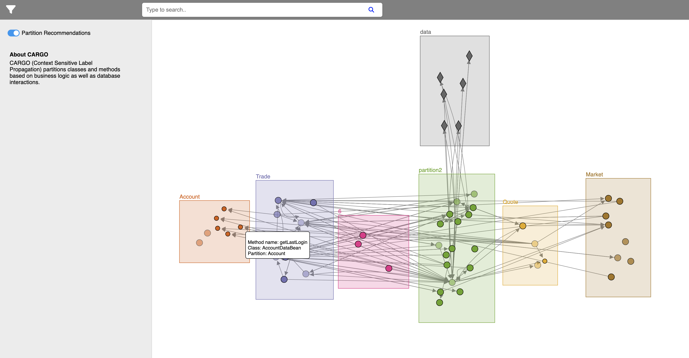
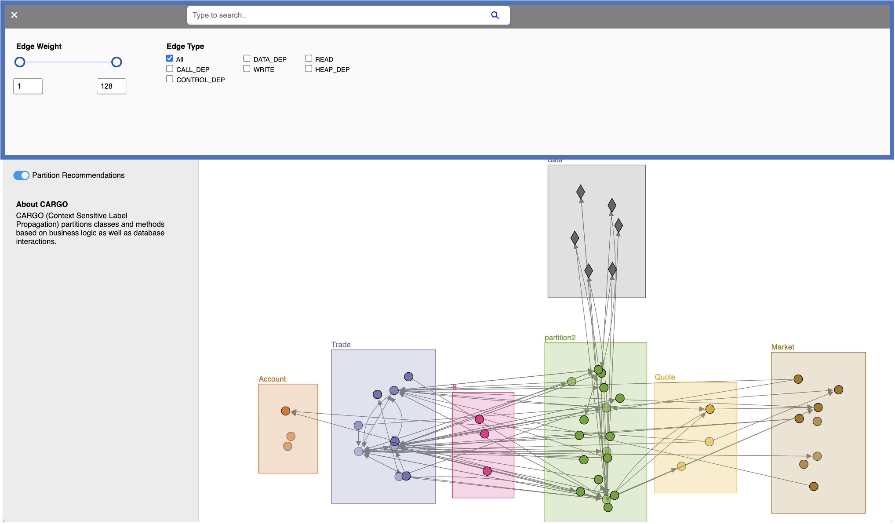
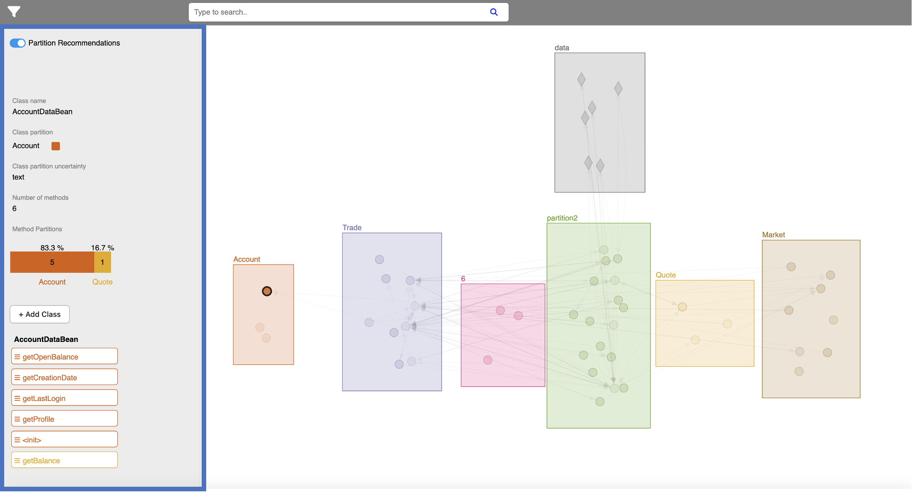
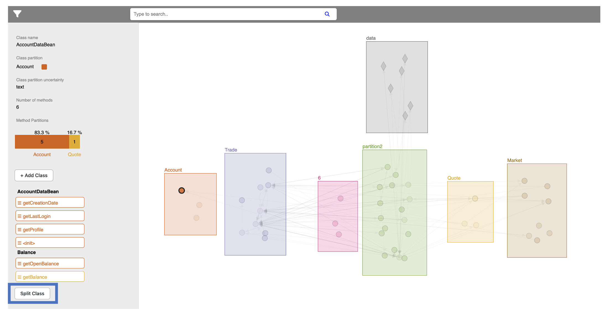
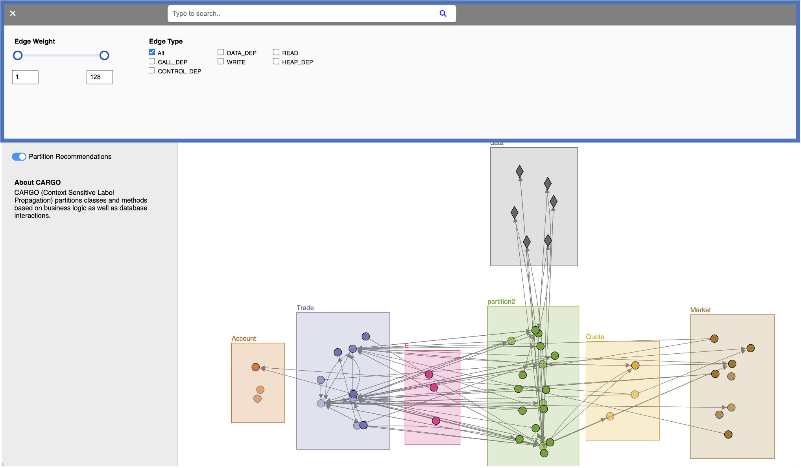
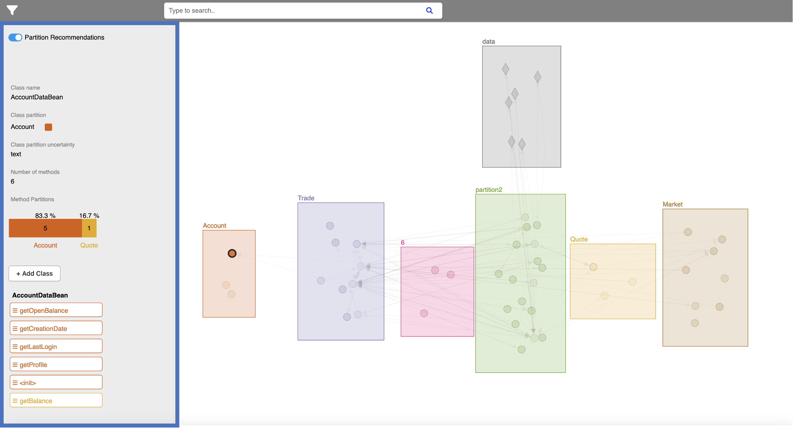

Instructions
1.0. Overview: Partitions, Classes and Methods
1.0.1. Expanding and Collapsing Nodes
To visualize the methods of a specific class, right click on the corresponding nodes. Smaller circles representing methods will appear. To collapse the methods back into their class, right click on a method.

1.0.2. Moving a class from one node to another
Drag and drop a node to a new partition
1.1. Filters
To open the filter tab, click on the filter icon. You can filter the display by edge weight (number of calls between two classes) and edge type (nature of the call)
On the top of the page, you can search for a class by class name to see more information about it in the side menu.

1.2. Side menu
Click on a partition, method and class to view information in the side menu

1.2.1. Splitting a class
You can decide to split a class if its methods are split between two partitions. Click on the "Add class" button, rename both classes and drag and drop the methods to their corresponding class. When you are satisfied with your assignment, click on the "Split Class" button.
Your changes will appear on the interface.

Tasks
In this task, you will be presented with partitions for DayTrader . Please try as much as possible to think out loud while you are conducting the task. Your thought process and feedback is very valuable to us. Click on the button below to open the interface in a new window and start conducting the following tasks.
(1) View the definition of the Market partition
(2) Identify the classes that read and write to database tables
(3) Identify classes that have a high volume of calls to other classes
(4) Find the MarketSummaryDataBean class
(5) Identify a class who is likely to belong to another partition
(6) Move that class to the other partition
(7) Accept the suggestion to move the other node
(8) Expand a node to see its methods
(9) Collapse the methods back into their class
(10) Select a class and split it into two classes based on partition assignment
1.1. Filters

1.2. Side menu
